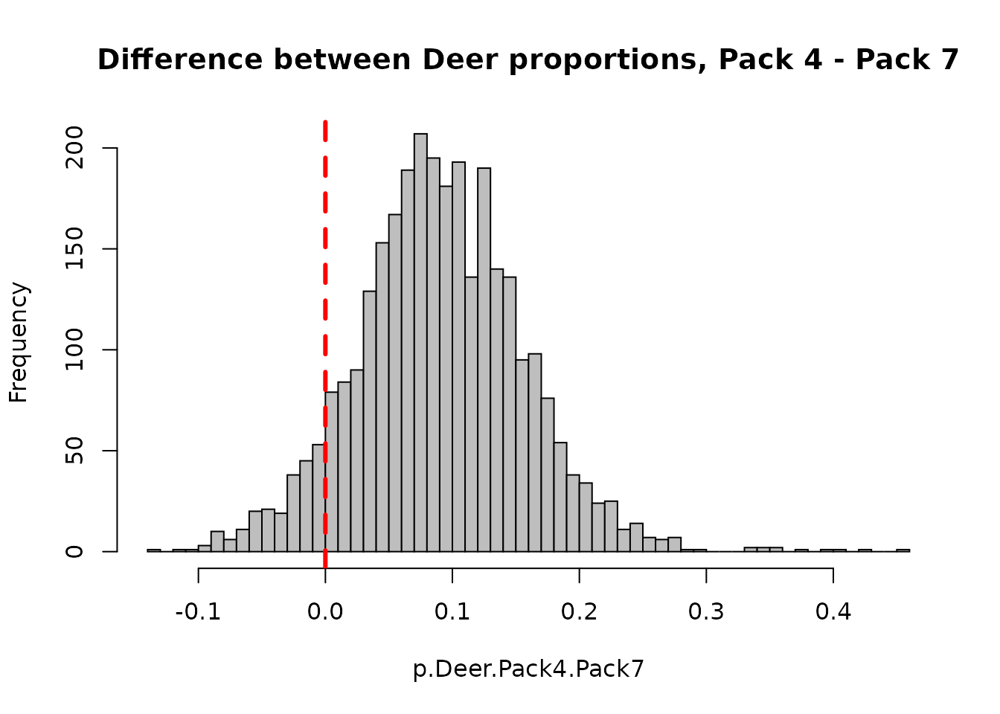
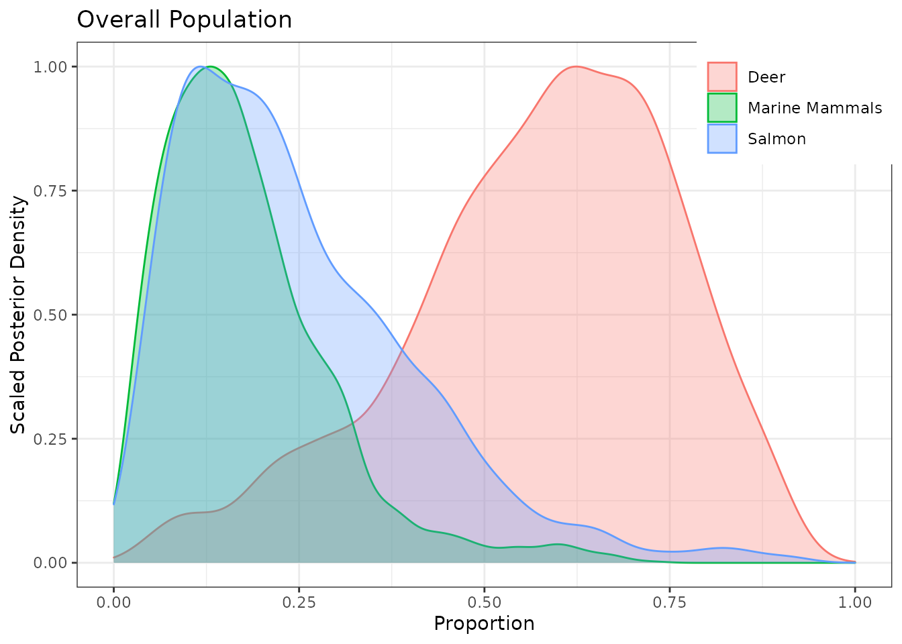
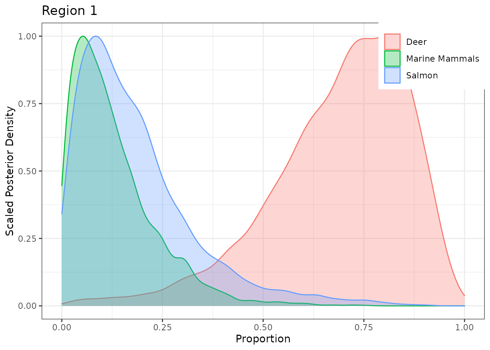
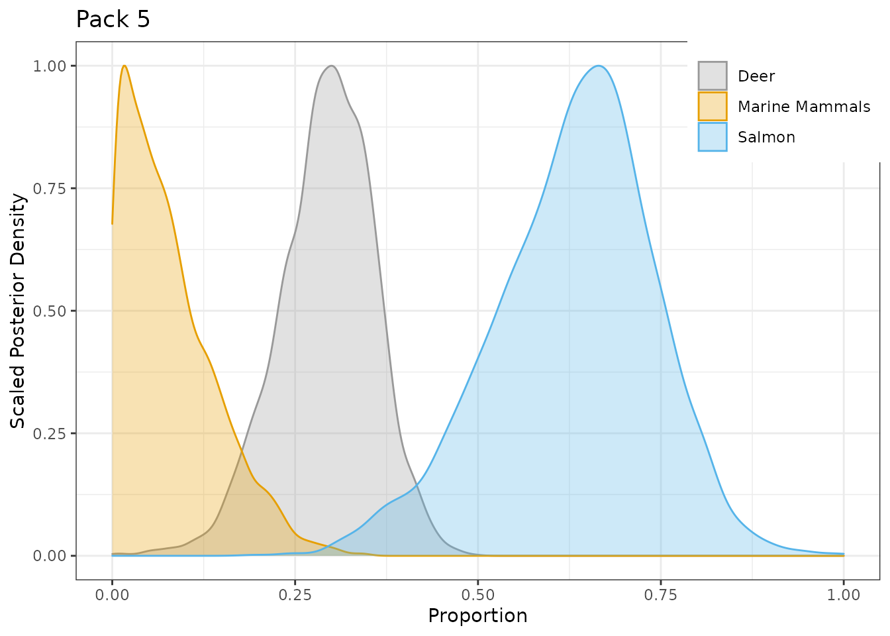

MixSIAR generates lots of output from a fit model. Up to version 3.1.12, by default these were printed to the R console with options to suppress this behavior and save png/pdf/txt files instead. Modifying these plots is necessary to make publication/presentation-quality figures. In version 3.1.13, we added the capability to return the ggplot2 objects in order to make this process easier.
As suggested in #235, output_JAGS has been split into separate functions. To maintain backward compatibility, the original output_JAGS function remains untouched and will continue to behave as before. However, a new argument to the output_options list is used (output_options$return_obj = TRUE) to return objects from the new functions:
output_diagnostics: named list of three data frames (one each for Gelman, Heidelberg-Welch, and Geweke)output_stats: data frame of summary statisticsoutput_posteriors: named nested list of ggplot objects
global: overall/global proportionsfac1: factor 1 (if in model)fac2: factor 2 (if in model)both: if model with 2 fixed effects or 1 fixed effect + 1 random effect (cannot plot one without the other)cont: continuous effect (if in model)sig: random effect variance terms (if model has random effects)epsilon: multiplicative error term (if model uses “Residual * Process” error)Below, we demonstrate how to modify output from the Wolves and Alligator examples. If you have not already done so, see these vignettes first for more commentary and explanation.
The latest changes are not yet on CRAN. Install the GitHub version:
install.packages("devtools") remotes::install_github("brianstock/MixSIAR", dependencies=T)
Run the wolves example with:
library(MixSIAR) mixsiar.dir <- find.package("MixSIAR") source(file.path(mixsiar.dir,"example_scripts","mixsiar_script_wolves_normal.R"))
ggplot objectsoutput_options <- list(summary_save = TRUE, summary_name = "summary_statistics", sup_post = TRUE, plot_post_save_pdf = FALSE, plot_post_name = "posterior_density", sup_pairs = TRUE, plot_pairs_save_pdf = TRUE, plot_pairs_name = "pairs_plot", sup_xy = TRUE, plot_xy_save_pdf = TRUE, plot_xy_name = "xy_plot", gelman = TRUE, heidel = FALSE, geweke = TRUE, diag_save = TRUE, diag_name = "diagnostics", indiv_effect = FALSE, plot_post_save_png = FALSE, plot_pairs_save_png = FALSE, plot_xy_save_png = FALSE, diag_save_ggmcmc = FALSE, return_obj = TRUE)
The diagnostics output can be saved as a list of data frames:
diag <- output_diagnostics(jags.1, mix, source, output_options)
##
## ################################################################################
## # Gelman-Rubin Diagnostic
## ################################################################################
##
## Generally the Gelman diagnostic should be < 1.05
##
## Out of 129 variables: 36 > 1.01
## 14 > 1.05
## 6 > 1.1
##
## The worst variables are:
## Point est. Upper C.I.
## p.global[1] 1.275049 1.784637
## ilr.fac2[7,1] 1.162670 1.470657
## ilr.fac2[6,1] 1.135328 1.393819
## p.global[2] 1.125475 1.350543
## p.global[3] 1.112949 1.348698
## ilr.fac1[3,1] 1.101600 1.283350
## p.fac1[2,1] 1.087942 1.275346
## ilr.fac1[2,1] 1.074415 1.175729
## p.fac1[1,1] 1.070492 1.221413
## p.fac1[2,2] 1.069061 1.214832
##
## ################################################################################
## # Geweke Diagnostic
## ################################################################################
##
## The Geweke diagnostic is a standard z-score, so we'd expect 5% to be outside +/-1.96
## Number of variables outside +/-1.96 in each chain (out of 129):
##
## Chain 1 Chain 2 Chain 3
## Geweke 5 11 18There is one data frame for each of: Gelman-Rubin, Geweke, and Heidelberger-Welch.
names(diag)
## [1] "gelman" "geweke"head(diag$gelman)
## Point est. Upper C.I.
## deviance 1.000846 1.004629
## fac1.sig 1.058615 1.158511
## fac2.sig 1.013372 1.042530
## ilr.fac1[1,1] 1.018531 1.033886
## ilr.fac1[2,1] 1.074415 1.175729
## ilr.fac1[3,1] 1.101600 1.283350head(diag$geweke)
## chain1 chain2 chain3
## deviance 1.054 -0.795 0.444
## fac1.sig 0.522 -1.348 -0.341
## fac2.sig 0.531 -1.165 -2.463
## ilr.fac1[1,1] -0.015 -0.016 -0.091
## ilr.fac1[2,1] 0.498 0.751 -1.551
## ilr.fac1[3,1] -0.840 2.162 -0.996The summary statistics can be saved as a data frame.
df.stats <- output_stats(jags.1, mix, source, output_options)
##
## ################################################################################
## # Summary Statistics
## ################################################################################
##
## DIC = 14.13675
##
## Mean SD 2.5% 5% 25% 50% 75% 95% 97.5%
## Epsilon.1 1.045 0.379 0.478 0.530 0.774 0.988 1.252 1.723 1.894
## Epsilon.2 0.462 0.187 0.211 0.233 0.332 0.427 0.557 0.796 0.933
## Region.SD 0.902 0.867 0.033 0.062 0.349 0.698 1.184 2.392 3.088
## Pack.SD 1.292 0.575 0.555 0.630 0.912 1.168 1.525 2.358 2.761
## p.global.Deer 0.575 0.182 0.156 0.224 0.466 0.598 0.708 0.837 0.870
## p.global.Marine Mammals 0.178 0.115 0.028 0.037 0.097 0.157 0.232 0.389 0.484
## p.global.Salmon 0.247 0.159 0.042 0.054 0.124 0.214 0.338 0.545 0.642
## p.Region 1.Deer 0.689 0.169 0.280 0.365 0.595 0.718 0.816 0.907 0.928
## p.Region 2.Deer 0.560 0.156 0.215 0.286 0.461 0.569 0.666 0.804 0.841
## p.Region 3.Deer 0.486 0.218 0.052 0.103 0.335 0.504 0.645 0.822 0.875
## p.Region 1.Marine Mammals 0.128 0.105 0.005 0.011 0.052 0.101 0.176 0.326 0.392
## p.Region 2.Marine Mammals 0.179 0.104 0.029 0.043 0.102 0.162 0.235 0.371 0.431
## p.Region 3.Marine Mammals 0.230 0.164 0.013 0.028 0.109 0.193 0.316 0.556 0.649
## p.Region 1.Salmon 0.183 0.146 0.011 0.022 0.078 0.149 0.246 0.476 0.584
## p.Region 2.Salmon 0.261 0.144 0.057 0.074 0.154 0.234 0.339 0.537 0.603
## p.Region 3.Salmon 0.284 0.209 0.027 0.042 0.129 0.232 0.388 0.717 0.845
## p.Pack 1.Deer 0.856 0.029 0.795 0.805 0.837 0.858 0.877 0.901 0.909
## p.Pack 2.Deer 0.734 0.042 0.653 0.664 0.702 0.736 0.766 0.797 0.806
## p.Pack 3.Deer 0.831 0.037 0.757 0.768 0.807 0.833 0.858 0.890 0.900
## p.Pack 4.Deer 0.461 0.050 0.355 0.375 0.431 0.465 0.495 0.541 0.557
## p.Pack 5.Deer 0.293 0.065 0.156 0.180 0.251 0.297 0.338 0.390 0.412
## p.Pack 6.Deer 0.751 0.030 0.681 0.695 0.733 0.755 0.772 0.790 0.796
## p.Pack 7.Deer 0.371 0.051 0.251 0.281 0.345 0.378 0.405 0.437 0.446
## p.Pack 8.Deer 0.288 0.097 0.030 0.098 0.237 0.296 0.351 0.434 0.454
## p.Pack 1.Marine Mammals 0.054 0.037 0.001 0.002 0.021 0.051 0.084 0.120 0.129
## p.Pack 2.Marine Mammals 0.097 0.072 0.001 0.003 0.026 0.088 0.165 0.213 0.222
## p.Pack 3.Marine Mammals 0.068 0.045 0.001 0.003 0.029 0.065 0.104 0.143 0.155
## p.Pack 4.Marine Mammals 0.067 0.052 0.002 0.003 0.023 0.056 0.099 0.166 0.185
## p.Pack 5.Marine Mammals 0.077 0.063 0.001 0.003 0.027 0.064 0.115 0.203 0.228
## p.Pack 6.Marine Mammals 0.171 0.042 0.068 0.090 0.150 0.180 0.201 0.224 0.230
## p.Pack 7.Marine Mammals 0.495 0.072 0.323 0.363 0.467 0.509 0.541 0.580 0.592
## p.Pack 8.Marine Mammals 0.373 0.125 0.012 0.073 0.330 0.404 0.458 0.513 0.531
## p.Pack 1.Salmon 0.090 0.055 0.003 0.006 0.042 0.089 0.133 0.178 0.190
## p.Pack 2.Salmon 0.169 0.107 0.004 0.010 0.065 0.178 0.266 0.323 0.335
## p.Pack 3.Salmon 0.100 0.066 0.002 0.007 0.042 0.096 0.153 0.212 0.228
## p.Pack 4.Salmon 0.472 0.086 0.283 0.315 0.420 0.478 0.533 0.603 0.621
## p.Pack 5.Salmon 0.630 0.110 0.386 0.434 0.562 0.639 0.703 0.798 0.820
## p.Pack 6.Salmon 0.079 0.063 0.003 0.006 0.032 0.064 0.108 0.202 0.243
## p.Pack 7.Salmon 0.134 0.109 0.005 0.011 0.058 0.110 0.181 0.331 0.408
## p.Pack 8.Salmon 0.339 0.213 0.027 0.065 0.197 0.297 0.423 0.824 0.932You can access individual stats using the rownames.
rownames(df.stats)
## [1] "Epsilon.1" "Epsilon.2"
## [3] "Region.SD" "Pack.SD"
## [5] "p.global.Deer" "p.global.Marine Mammals"
## [7] "p.global.Salmon" "p.Region 1.Deer"
## [9] "p.Region 2.Deer" "p.Region 3.Deer"
## [11] "p.Region 1.Marine Mammals" "p.Region 2.Marine Mammals"
## [13] "p.Region 3.Marine Mammals" "p.Region 1.Salmon"
## [15] "p.Region 2.Salmon" "p.Region 3.Salmon"
## [17] "p.Pack 1.Deer" "p.Pack 2.Deer"
## [19] "p.Pack 3.Deer" "p.Pack 4.Deer"
## [21] "p.Pack 5.Deer" "p.Pack 6.Deer"
## [23] "p.Pack 7.Deer" "p.Pack 8.Deer"
## [25] "p.Pack 1.Marine Mammals" "p.Pack 2.Marine Mammals"
## [27] "p.Pack 3.Marine Mammals" "p.Pack 4.Marine Mammals"
## [29] "p.Pack 5.Marine Mammals" "p.Pack 6.Marine Mammals"
## [31] "p.Pack 7.Marine Mammals" "p.Pack 8.Marine Mammals"
## [33] "p.Pack 1.Salmon" "p.Pack 2.Salmon"
## [35] "p.Pack 3.Salmon" "p.Pack 4.Salmon"
## [37] "p.Pack 5.Salmon" "p.Pack 6.Salmon"
## [39] "p.Pack 7.Salmon" "p.Pack 8.Salmon"For example, look at the Salmon diet proportion for Pack 4 wolves:
df.stats[rownames(df.stats) == "p.Pack 4.Salmon",]
## Mean SD 2.5% 5% 25% 50% 75% 95% 97.5%
## 0.472 0.086 0.283 0.315 0.420 0.478 0.533 0.603 0.621For example, get the 95% CI for the Deer diet proportion for Region 1 wolves:
## 2.5% 97.5%
## 0.280 0.928Note that you can also do the same from the MCMC draws directly. p.fac1 is the diet proportion by Region (factor 1), indexed as [MCMC chain, Region, Source]. See that these match the stats above.
source$source_names # confirm that Deer = source 1
## [1] "Deer" "Marine Mammals" "Salmon"## 2.5% 97.5%
## 0.2796300 0.9282151Calculate the probability that the Region 2 Deer diet proportion is greater than 0.7.
# Total num draws tot <- length(jags.1$BUGSoutput$sims.list$p.fac1[,2,1]) # Num draws above 0.7 above <- length(which(jags.1$BUGSoutput$sims.list$p.fac1[,2,1] > 0.7)) # Prob that the diet proportion is above 70% (prob <- above/tot)
## [1] 0.187Or maybe we want the probability that Pack 4 eats more Deer than Pack 7:
## Mean SD 2.5% 5% 25% 50% 75% 95% 97.5%
## p.Pack 4.Deer 0.461 0.050 0.355 0.375 0.431 0.465 0.495 0.541 0.557
## p.Pack 7.Deer 0.371 0.051 0.251 0.281 0.345 0.378 0.405 0.437 0.446(prob.Deer.Pack4.Pack7 <- sum(jags.1$BUGSoutput$sims.list$p.fac2[,4,1] > jags.1$BUGSoutput$sims.list$p.fac2[,7,1])/tot)
## [1] 0.9236667We can also get a complete posterior probability for the difference between Pack 4 and Pack 7 (i.e. is Pack4 - Pack7 greater than 0?)
p.Deer.Pack4.Pack7 <- jags.1$BUGSoutput$sims.list$p.fac2[,4,1] - jags.1$BUGSoutput$sims.list$p.fac2[,7,1] hist(p.Deer.Pack4.Pack7,breaks=50,col="grey", main="Difference between Deer proportions, Pack 4 - Pack 7") abline(v=0,col="red",lty=2,lwd=3)

We can access the posterior density plots for later modification since we set output_options$return_obj = TRUE.
g.post <- output_posteriors(jags.1, mix, source, output_options)
g.post is a named nested list of ggplot objects
global: overall/global proportionsfac1: factor 1 (if in model)fac2: factor 2 (if in model)both: if model with 2 fixed effects or 1 fixed effect + 1 random effect (cannot plot one without the other)cont: continuous effect (if in model)sig: random effect variance terms (if model has random effects)epsilon: multiplicative error term (if model uses “Residual * Process” error)names(g.post)
## [1] "global" "fac1" "fac2" "sig" "epsilon"The default p.global posterior density plot looks ok.
g.post$global

The Region plots are in the nested list g.post$fac1 (likewise for Pack plots, in g.post$fac2). Plot Region 1:
g.post$fac1[[1]]

Plot Pack 5 with a different color palette.
# note the 'ggplot2::' is only necessary for building this vignette # in your code you can simply load ggplot2 with library(ggplot2) g.post$fac2[[5]] + ggplot2::scale_fill_manual(values=c("#999999", "#E69F00", "#56B4E9")) + ggplot2::scale_color_manual(values=c("#999999", "#E69F00", "#56B4E9"))

The Alligator Example has a continuous effect. It takes awhile to run and we only use model 5 (Length) below, so instead of running the entire example you can run only model 5. If you want to run all 8 models (full example), it’s a good idea to save the results for later.
rm(list=ls()) # clear wolves ex objects source(file.path(mixsiar.dir,"example_scripts","mixsiar_script_alligator.R")) # run all 8 models save.image("where/to/save/output/alligator_short.RData") # specify path, where to save file
First change output_options to return the ggplot objects, then get the posterior density plots
output_options$return_obj = TRUE g.post <- output_posteriors(jags.mod[[5]], mix[[5]], source[[5]], output_options)
In this case there is no g.post$fac1, g.post$fac2, or g.post$sig because there are no fixed/random effects. There is a g.post$cont, which holds the plots for the continuous effect, Length.
names(g.post)
g.post$cont has 4 plots, each of which can be modified:
g.post$cont[[1]] + ggplot2::theme(legend.position="right")
g.post$cont[[2]] + ggplot2::scale_fill_grey()
g.post$cont[[3]]
g.post$cont[[4]]
The plot_continuous_var function has a couple other options you can modify:
alphaCI: alpha level to use for credible interval width (default = 0.05, 95% CI)exclude_sources_below: proportion threshhold to include sources in the plot. Some sources can be estimated at very low proportions, and this makes the plot less clear. Setting exclude_sources_below = 0.1 will remove sources with median proportion less than 10% for all values of the continuous variable.g.cont <- plot_continuous_var(jags.1, mix, source, output_options, alphaCI=0.05, exclude_sources_below=0.1) g.cont
Compare to plot using 80% CI:
g.cont80 <- plot_continuous_var(jags.1, mix, source, output_options, alphaCI=0.2) g.cont80